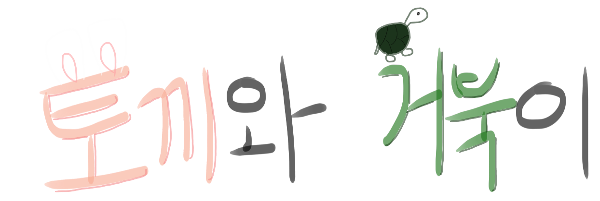
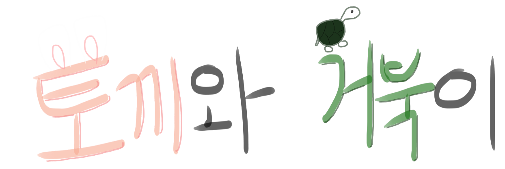

|
토끼는 항상 거북이에게 빈정거리며 놀려대곤 했습니다. "느림보 거북이."
매번 느리다며 토끼에게 놀림 받던 거북이는 마음을 단단히 먹고는, 토끼에게 제안을 하였습니다.
"우리 누가 더 빠른지 시합 해 볼래?"
그러자, 토끼는 대답합니다. "그래 느림보, 거북이! 당연히 달리기 시합의 승리는 나의 것 아니겠어? 해보자!"
|
|
그렇게 토끼와 거북이는 달리기 시합을 하게 되었습니다.
빠르게 달려가던 토끼는 느린 거북이는 절대 자신을 따라오지 못할 것이라 생각하며, 잠에 들어버렸습니다.
그러나 거북이는 지치지 않고, 열심히 달리고 달려 자고 있던 토끼를 앞지르게 되었습니다.
|
|
시간이 얼마나 흘렀을까요. 열심히 달려가던 거북이는 한창 자고있던 토끼를 앞장섰고, 나중에 되서야 토끼는 잠에서 깨어났습니다.
깨어나던 토끼는 울먹이며 소리질렀습니다. "아니야! 거북이 거기 서! 나보다 느린 네가 나보다 앞에 있을 수는 없어!"
이렇게 소리지르던 토끼는 그제서야 달려가기 시작했습니다.
|
|
그러나 거북이는 마지막 결승선에 이미 거의 도착해있었습니다.
거북이는 온 힘을 다해 열심히 뛰었습니다. 느리지만, 뒤따라오던 토끼에게 지지 않으려 더욱 힘을 쏟아 뛰었습니다.
결국, 거북이는 토끼보다 결승선에 먼저 도착하게 되었습니다.
"토끼야, 나는 너보다 느리지만 너보다 꾸준히 열심히 달린 덕에 이겼어!" |
 
